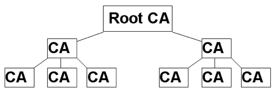
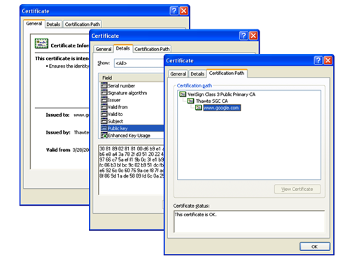

7. CA (Certificate Authority)
การใช้วิธีการเข้ารหัสแบบอสมมาตร (Asymmetric Key Cryptography) ที่จำเป็นจะต้องมีการแจกจ่าย Public Key ไปยังผู้ร่วมสื่อสารทุกๆรายนั้นมีจุดอ่อนจากการโจมตีแบบ MITM: Man In The Middle โดยแฮกเกอร์ จะทำตัวเป็นผู้อยู่ตรงกลางของการสื่อสารแล้วรอจังหวะที่ผู้สื่อสารข้อมูลมีการรับส่งและแลกเปลี่ยน Key กัน โดยแฮกเกอร์จะทำการส่ง Public Key ของแฮกเกอร์เองไปยังผู้รับ ดังนั้นแฮกเกอร์จึงสามารถที่จะปลอมแปลงข้อมูลได้โดยใช้ Private Key ของตนเองในการทำ Digital Signatures ทำให้ผู้รับหลงเชื่อคิดว่าข้อมูลนั้นถูกส่งมายังผู้ส่งจริง หรือบางครั้งแฮกเกอร์ก็ปลอมแปลงทั้ง Private Key และ Public Key
ตัวอย่างของการโจมตี Asymmetric Key Cryptography โดยใช้วิธี MITM ที่เห็นได้บ่อยคือการถอดรหัสข้อมูลที่ส่งทาง https (เช่นรหัสผ่านของ hotmail, Gmail และเว็บไซต์ e-commerce อื่น ๆ) ด้วยโปรแกรมในชุดของ Backtrack หรือใช้โปรแกรม Cain โดยแฮกเกอร์จะดักรอขั้นตอนการส่ง Public Key ผ่านทาง https เมื่อ Public Key ของเว็บไซต์ (เช่น Hotmail) ถูกส่งมาถึงแฮกเกอร์ เขาจะทำการสร้าง Private Key และ Public Key ของตนเองขึ้นมา แล้วส่ง Public Key ไปให้เหยื่อ
เมื่อเหยื่อต้องการส่งข้อมูลมายังเว็บไซต์ก็จะเข้ารหัสด้วย Public Key ของเว็บไซต์เพื่อให้เว็บไซต์ถอดได้แต่เพียงผู้เดียว แต่ Public Key นั้นที่แท้จริงเป็น Public Key ของแฮกเกอร์ จึงทำให้แฮกเกอร์ถอดรหัสได้และได้ข้อมูลที่สำคัญ (เช่นรหัสผ่านหรือ Session Key ของโพรโทคอล https) แฮกเกอร์ที่มี Public Key ของเว็บไซต์อยู่แล้วก็จะเอาข้อมูลนั้นมาดำเนินการเข้ารหัสด้วย Public Key จริงของเว็บไซต์ และส่งให้เว็บเซิร์ฟเวอร์ต่อเพื่อให้การสื่อสารครบวงจรเพื่อที่เหยื่อจะได้ไม่รู้สึกถึงความผิดปกติ
เพื่อแก้ไขปัญหาที่ผู้รับไม่สามารถที่จะตรวจสอบได้ว่า Public Key ที่ตนเองได้รับนั้นเป็นของผู้ส่งจริงหรือไม่ จึงได้มีการพัฒนาโครงสร้างพื้นฐานของ Asymmetric Key Cryptography ให้ปลอดภัยขึ้น เรียกว่า Public Key Infrastructure (PKI) โดยกำหนดให้มีหน่วยงานกลางเป็นผู้รับรอง Public Key ของแต่ละคน / เว็บไซต์ / เซิร์ฟเวอร์ หน่วยงานกลางดังกล่าวมีชื่อเรียกว่า CA (Certificate Authority)
โดย CA จะได้รับการรับรองโดย Root CA อีกครั้งหนึ่ง ผู้รับส่งข้อมูลทุกรายจะต้องมี Public Key ของ Root CA ติดตั้งไว้บนระบบ เช่นบน Windows XP ก็จะมี Public Key ของ Root CA ทุกราย ซึ่งเราสามารถเปิดดู Public Key ของ Root CA ได้โดยใช้ Internet Explorer (เมนู Tools -> Internet Options -> Content -> Certificates->Trusted Root Certification Authority)
CA จะนำ Public Key ของผู้ส่ง (หรือผู้ใช้ / เว็บไซต์ ที่ขอให้ CA รับรอง) มารับรองด้วย Digital Signatures ของ CA (ทำการนำข้อมูลที่สำคัญเช่น Public Key และชื่อเว็บไซต์ ของผู้ส่งมาแฮช แล้วเข้ารหัสด้วย Private Key ของ CA กลายเป็น Digital Signatures) แล้วนำข้อมูลต้นฉบับ (Public Key และชื่อเว็บไซต์) มาผนวกเข้ากับ Digital Signatures ดังกล่าว กลายเป็นสิ่งที่เรียกว่า Certificate
การรับรองเป็นลำดับชั้นของ CA (Certificate Authority)

ตัวอย่างเช่น Public Key ของเว็บไซต์ www.google.com ได้รับการรับรองโดย CA ชื่อ Thawte SGC ซึ่ง Thawte SGC ทำการรับรองโดยใช้ Certificate (มี Digital Signatures ที่รับรองโดย CA และมีข้อมูล Public Key และชื่อของเว็บไซต์ www.google.com อยู่ภายใน) ส่วน Thawte SGC ก็ถูกรับรองด้วย Certificate ที่ออกโดย Root CA ชื่อ VeriSign อีกทอดหนึ่งโดยใช้กลไกแบบเดียวกันกับที่ Thawte SGC รับรอง www.google.com
บราวเซอร์สามารถใช้ Public Key ของ VeriSign (Root CA) ที่มีอยู่บน Windows ถอดรหัสทำให้แน่ใจได้ว่า Public Key ของ Thawte SGC เป็นของจริง และมั่นใจได้ว่า Public Key ของ www.google.com เป็นของจริงได้โดยใช้วิธีการในทำนองเดียวกัน

Certificate ของ www.google.com